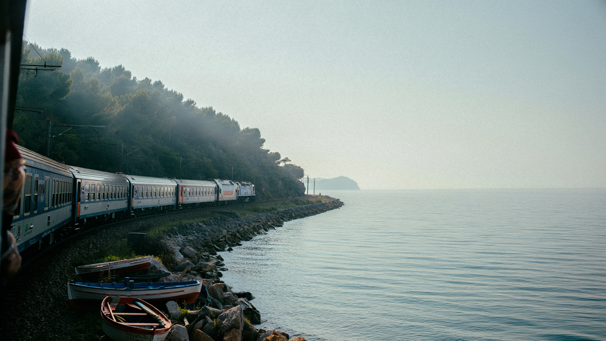

Trajnostna potovanja in digitalni odklop: zakaj manj planiranja pogosto prinese več

Trajnostna potovanja niso modna fraza za lepo embalažo enakega vedenja. Njihov smisel je precej bolj preprost. Gre za to, da se po destinaciji premikate počasneje, z manj pritiska, z več spoštovanja do prostora in z več koristi za ljudi, ki tam živijo. Ko ostanete dlje na enem mestu, manj obremenite prevoz, manj časa izgubite za selitve in imate več možnosti, da kraj dejansko razumete. Tak pristop pogosto koristi tudi popotniku, ne samo okolju, ker zmanjšuje utrujenost in občutek razdrobljenosti.
Enako velja za digitalni odklop. Mnogi si predstavljajo, da to pomeni popolno izginotje z interneta, a v praksi je dovolj že manjša sprememba. Če telefon ni stalno na mizi, če zjutraj ne začnete dneva s sporočili in če med večerjo ne preverjate naslednje nastanitve, se kakovost potovanja hitro spremeni. Pozornost se vrne v okolje. Opazite zvoke, tempo kraja, lokalne navade in tudi svoj notranji ritem. To ni romantiziranje. To je čista posledica manj prekinitev.
Koristen prvi korak je, da digitalni odklop povežete z logistiko. Vnaprej si shranite zemljevide, rezervacije in osnovne informacije. Tako niste prisiljeni v nenehno brskanje. Ko imate osnove urejene, lahko telefon ostane v žepu dalj časa. Če vas zanima, kako plan postaviti bolj mirno že od začetka, poglejte tudi prispevek o načrtovanju oddiha brez stresa, kjer je isti princip razložen skozi dnevni ritem in realna pričakovanja.
Trajnostni pristop je uporaben tudi pri izbiri ponudnikov. Lokalna nastanitev, manjši družinski apartma ali turistična kmetija pogosto pomenijo bolj neposreden stik s krajem. Tudi prehrana se spremeni, ker niste zaprti v enak meni, ki ga ponujajo verige. Poleg tega dobite bolj iskrene informacije o tem, kaj se splača obiskati in čemu se je bolje izogniti. Takšne malenkosti ne zvenijo veliko, vendar ravno one določajo, ali se s poti vrnete z občutkom polnosti ali samo z mapo fotografij.
Največja napaka pri trajnostnem potovanju je, da ga ljudje zamenjajo za odpoved udobju. To ni res. Gre za boljši izbor, ne za slabše pogoje. Manj premikov, manj impulzivnih odločitev in manj digitalnega šuma ne pomenijo manj doživetij. Pomenijo več prostora za tista, ki ostanejo v spominu. Če je cilj oddiha bolj umirjeno telo, manj mentalne navlake in boljši stik z okoljem, potem sta trajnost in digitalni odklop preprosto racionalna izbira, ne ideološka drža.